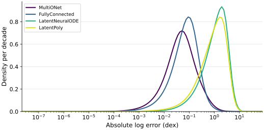
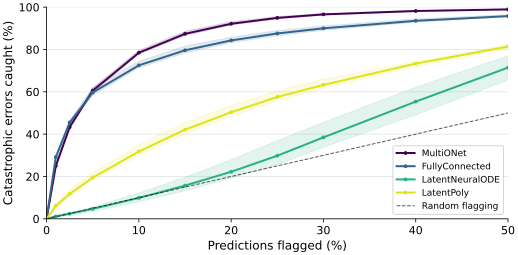

Cloud Parametric#
Snapshot overview · All snapshots
A&A reference configurations (November 2026)
Evaluation split Validation (val) · Timing GPU NVIDIA A30 · Workload 163,900 predicted states per pass
Direct and ensemble metrics show mean ± sample standard deviation across seeds. Bold marks the best displayed value for each metric, including displayed ties. Numerical rankings describe this snapshot and protocol.
Direct prediction#
Model |
mLAE ↓ (dex) |
LAE₉₉ ↓ (dex) |
mRE ↓ (%) |
Inference ↓ (µs/state) |
Parameters (k) |
|---|---|---|---|---|---|
FullyConnected |
0.111 ± 0.003 |
0.664 ± 0.016 |
17.08 ± 0.61 |
0.176 ± 0.009 |
360.8 |
MultiONet |
0.101 ± 0.003 |
0.844 ± 0.021 |
10.80 ± 0.38 |
0.233 ± 0.002 |
371.9 |
LatentNeuralODE |
1.522 ± 0.008 |
4.837 ± 0.050 |
99.77 ± 0.05 |
0.300 ± 0.005 |
233.8 |
LatentPoly |
1.332 ± 0.012 |
4.527 ± 0.062 |
99.47 ± 0.01 |
0.026 ± 0.000 |
17.1 |
mLAE is mean absolute log error. LAE₉₉ is the 99th percentile of absolute log error. mRE is calculated as the median relative error within each seed.
Synchronized forward calls after one warm-up pass. Each run’s total forward-call time is divided by validation trajectories × stored timesteps. The protocol uses model-specific batch sizes.
Five-model ensembles#
Model |
Ensemble mLAE ↓ (dex) |
Error–uncertainty Pearson r ↑ |
|---|---|---|
FullyConnected |
0.072 ± 0.003 |
0.484 ± 0.022 |
MultiONet |
0.078 ± 0.000 |
0.558 ± 0.005 |
LatentNeuralODE |
1.510 ± 0.002 |
-0.062 ± 0.026 |
LatentPoly |
1.251 ± 0.005 |
0.124 ± 0.012 |
Pearson r measures how ensemble spread tracks error magnitude.
Rollout#
Ordinary training · stored time grid · 10 stored steps per chunk. Entries are rollout mLAE in dex.
Model |
Seed 42 |
Seed 142 |
Seed 242 |
Median ↓ |
|---|---|---|---|---|
FullyConnected |
0.765 |
0.703 |
0.775 |
0.765 |
MultiONet |
0.616 |
0.618 |
0.780 |
0.618 |
LatentNeuralODE |
1.878 |
1.855 |
1.844 |
1.855 |
LatentPoly |
2.088 |
1.881 |
2.002 |
2.002 |
Note
The training split was subsampled by a factor of two. Evaluation used the full validation split. All three MultiONet seeds overflowed the real-space rollout error summaries.
Diagnostic plots#
Absolute log-error distribution#

Each line averages the seed-level smoothed histograms for direct predictions, giving equal weight to each seed. Bins are evenly spaced in log space. The download records exact zeros separately.#
Catastrophic-error recall#

Flag individual predicted quantities in order of decreasing ensemble spread. For each surrogate and seed, catastrophic errors are at or above the 99th percentile of the ensemble-mean absolute log error. Lines show mean recall, shading shows the minimum and maximum across seeds, and the diagonal shows what random flagging would catch on average.#
Data and provenance#
Results bundle (JSON) · Per-seed metrics (CSV)
Run code at e3edee2 · Dataset archive · A&A paper
Timing hardware: NVIDIA A30, 24576 MiB, 620.70.06. PyTorch 2.14.1, CUDA 13.0. The JSON bundle includes the protocol, configuration hashes, evaluation settings, and full-precision seed results.